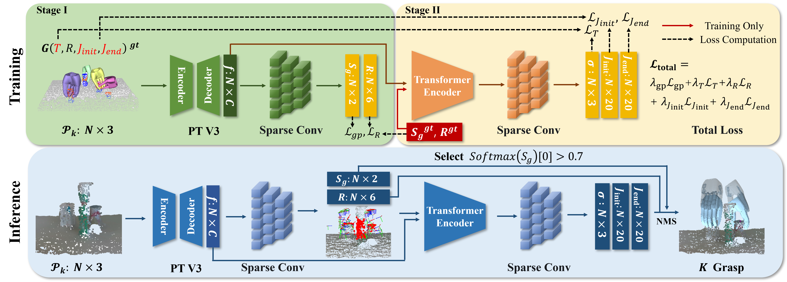
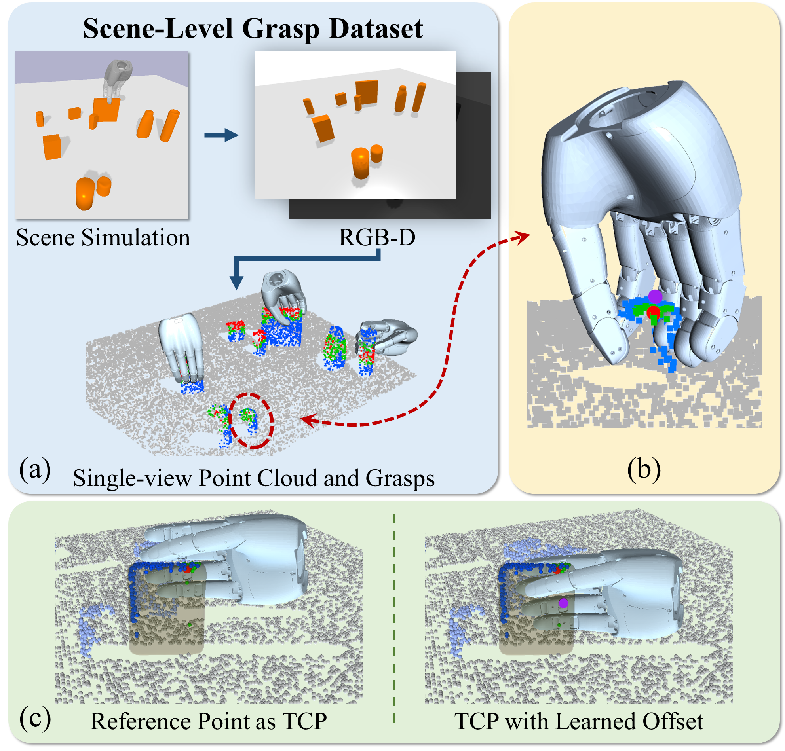
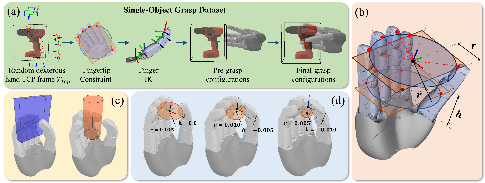
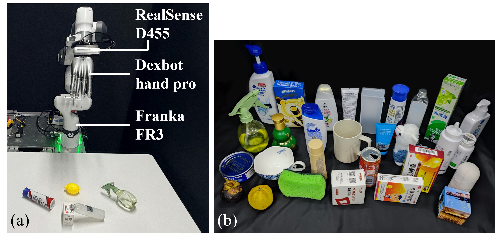
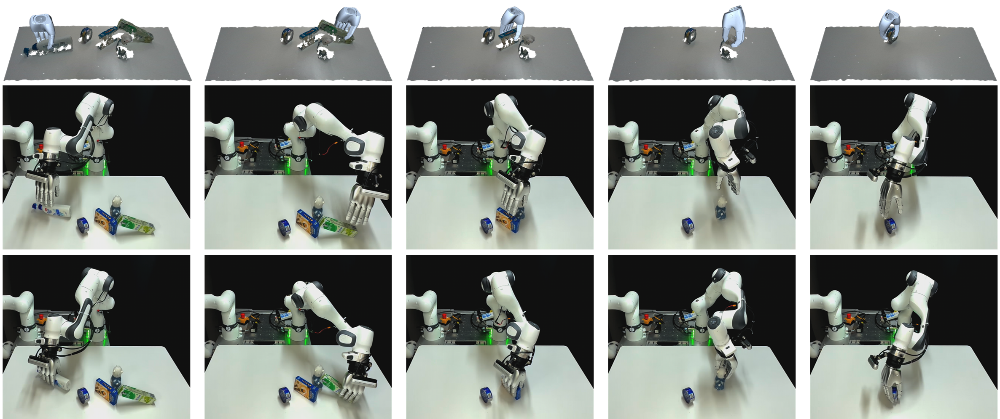
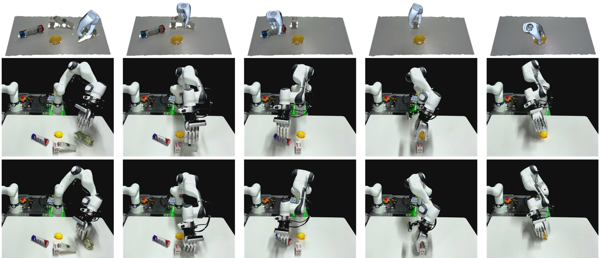

Observed scene
Partial point cloud from one RGB-D view.
Research project · IEEE T-ASE
DGS-NET
Learning dense, high-DoF grasp configurations directly from a partial scene point cloud—without reconstructing each object first.
DGS-Net: Learning Dexterous Grasps from Single-View Point Clouds via a Multi-Object Scene Dataset
01 / Overview
In cluttered scenes, a single depth view leaves objects partially hidden. DGS-Net predicts where a dexterous hand can grasp, how it should be oriented, and how its joints should move from approach to contact.
Its training data connects dense single-object grasp synthesis to scene-level physical validation, giving the network reference points, graspable neighborhoods, TCP offsets, and both pre-grasp and final hand configurations.
Read the open preprint02 / Method
DGS-Net maps observed geometry to a full dexterous grasp, including the approach pose.
Partial point cloud from one RGB-D view.
Point-wise graspability and 6D hand rotation.
Point-to-TCP offset and 20-joint pre-grasp / final-grasp vectors.
Explicit offsets address the gap between an observed surface point and the hand TCP. A pre-grasp configuration gives the hand a defined approach state.

03 / Dataset
A two-stage pipeline turns object-level grasps into validated multi-object scene grasps with point-level supervision.
Generate dense candidate hand configurations across 307 object models and five scale factors.
Place objects in clutter, check grasps in simulation, and render 256 views per scene.
Attach camera-frame poses and graspable neighborhoods to sampled scene point clouds.

Object-level synthesis produces diverse hand configurations before the scene-level simulation filters and labels them.

04 / Results
The project evaluates grasps in real multi-object arrangements as well as controlled perturbation tests.

Grasp success rate
Physical platform · reported in project presentation
Scene clearance rate
Physical platform · reported in project presentation


05 / Watch
A walkthrough of the method, plus selected physical trials and a perturbation comparison.
Method, dataset, and experiments · 03:31
06 / Resources
The paper, implementation, dataset, and presentation are available below. For formal citation details, use the publisher record.